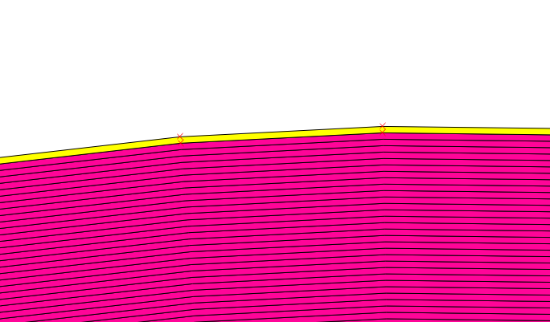
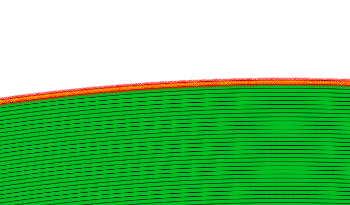
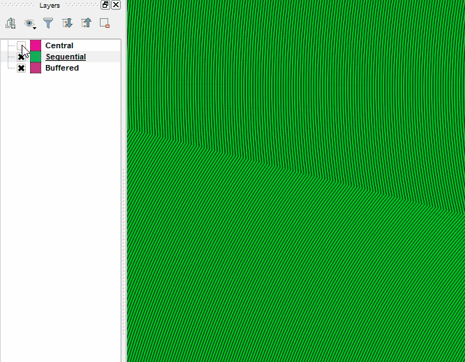
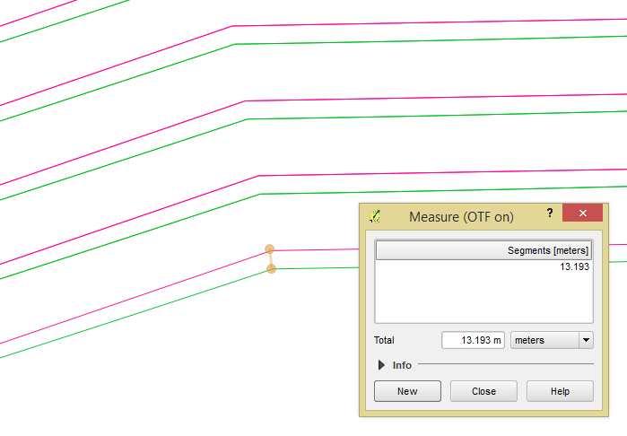
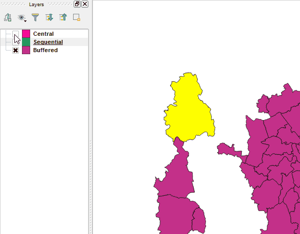

QGIS Multi Ring Buffer
Help Guide
Any issues not answered in this guide should be logged at:
https://github.com/HeikkiVesanto/QGIS_Multi_Ring_Buffer/issues
Why are my buffers square?
This is an issue with feature simplification in QGIS.
Turn off feature simplification:
Settings>Options>Rendering>Untick "Enable feature simplification by default"
Try the buffer again.
What is the difference between "Central" and "Sequential" buffer styles?
Central buffers the original feature, with progressively larger buffer distance.
5, 10, 15, etc...
Sequential buffers the original feature with 5 for example, and then buffers the resulting buffer with 5 again and so on.
What does this impact?
Speed in seconds:
| Features | Rings | Central | Sequential |
| 1 | 5 | 0.59 | 0.56 |
| 1 | 200 | 60.83 | 31.76 |
| 1 | 2000 | 203.84 | 67.00 |
| 3 | 200 | 62.89 | 40.89 |
| 55 | 5 | 8.06 | 6.38 |
| 55 | 200 | 628.38 | 586.67 |
Sequential is quicker. Although for very high segment counts this might not be the case.
Vertex counts:
Sequential has much higher vertex counts.
For comparison, for a 500 ring buffer the outermost ring had the following vertice counts:
| Style | Vertices |
| Central | 488 |
| Sequential | 30918 |
We can see this with editing turned on:
Central:

Sequential:

We
can also see a smoother profile in the sequential buffer. However the
difference is not major, and hard to discern with the naked eye.

So we have at most about around a 10m discrepancy, with 500 50m rings, so around 25000m of distance from the original feature.

Rendering:
Central is much faster.
Central:

Sequential: